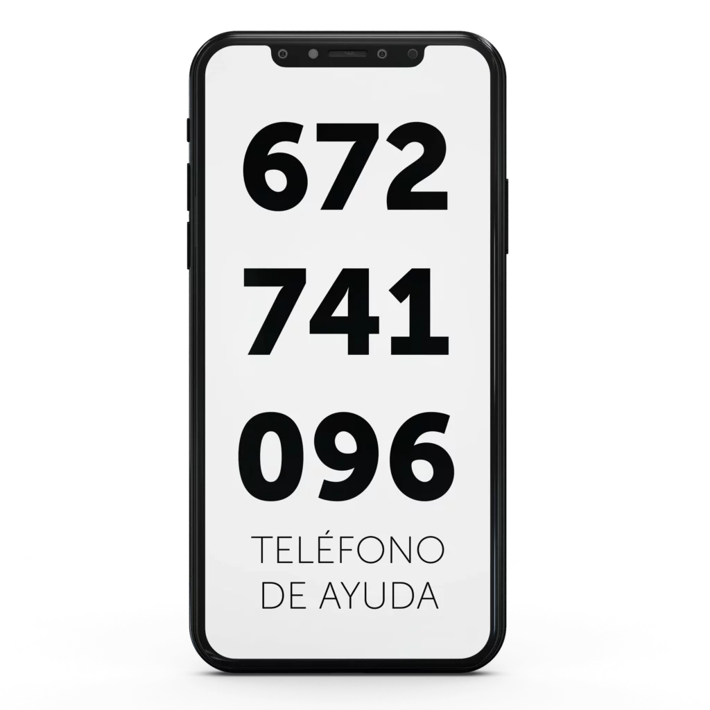
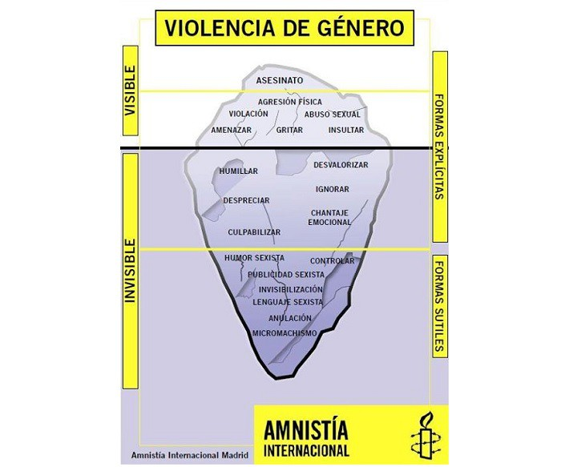

Aquí encontrarás información para tu día a día.

Teléfonos de Emergencia de APERFOSA
672 74 10 96
Teléfonos de Emergencia de carácter general
Emergencias de carácter general (112)
Ambulancia y emergencias de salud (061)
Policía nacional (091)
Guardia Civil (062)
Centros de referencia
Alerta
TRATALa trata de personas es el traslado de seres humanos de un lugar a otro dentro de un mismo país o de un país a otro con fines de explotación, ya sea, explotación sexual, laboral o mendicidad.
Para que se dé esta situación, se utiliza el engaño, la amenaza, el uso de la fuerza, el rapto, fraude, abuso de poder o por una situación de vulnerabilidad.
https://www.unodc.org/documents/lpo-brazil/sobre-unodc/Fact_Sheet_Dados_Trafico_de_Pessoas_geral_ESP.pdf
EXPLOTACIÓN SEXUALLa explotación sexual es una forma de esclavitud que utiliza a las personas en situación de mayor vulnerabilidad como mercancía, violando sus derechos.
https://www.lamoncloa.gob.es/consejodeministros/Paginas/enlaces/210921-enlace-explotacion-trata.aspx
INDICADORES DE UNA POSIBLE VÍCTIMA DE TRATA Y/O EXPLOTACIÓN SEXUAL:-Llevar pocas pertenencias o la ropa que trae no concuerda con el clima del lugar. Por ejemplo: Llevar ropa veraniega cuando se está en invierno.
-Apariencia algo desaliñada o poca higiene, por las condiciones en las que se encuentra en el lugar en el que “vive”.
-Señales de maltrato (quemaduras, moratones, cortes,etc)
-Desconocen los detalles del viaje (el lugar al que van, en qué van a trabajar…) incluso les dicen qué decir para salir de su país de origen.
-No tiene su documentación de viaje o identificación, y posiblemente sea porque se lo están reteniendo.
-Tienen un discurso aprendido donde suelen utilizar las mismas palabras, y sin coherencia pues como hemos mencionado anteriormente están siguiendo unas instrucciones sobre que tienen que decir.
-Hablan poco, o presentan miedo o nerviosismo, y evaden preguntas.
-Pueden tener una persona que las acompaña continuamente, porque puede hacer de “traductor/a” o simplemente para vigilarla.
-Tal vez tengan tatuajes que indican que pertenecen a alguna red determinada.
-Están amenazadas, y sienten miedo y preocupación, pues utilizan a las familias para este chantaje.
https://estoyenlafrontera.com/violencia-y-trata-de-personas/como-identificar-si-una-persona-es-victima-de-trata-de-personas
Información sacada de: https://www.plannedparenthood.org/es/temas-de-salud/relaciones/consentimiento-sexual
VIOLENCIA DE GÉNEROLa violencia de género es un tipo de violencia psicológica, física, sexual y/o económica que afecta a mujeres por el hecho de serlo y que es realizada por hombres ya que consideran el sexo femenino inferior.
TIPOS DE VIOLENCIAEsta violencia puede ser cualquier tipo de comportamiento que se utiliza para tener poder y control sobre la mujer.
Violencia económica: Consiste en mantener un control sobre los recursos financieros de la mujer, impidiéndole acceder a ellos y prohibiéndole trabajar o asistir a la escuela, haciendo que se cree una dependencia financiera hacia el hombre pues para realizar alguna gestión se le debe preguntar o pedir permiso; y no se puede realizar sin su consentimiento.
Violencia psicológica: Es la violencia más invisible, pues es posible que no se observe a primera vista y seguramente sea la más complicada, porque es la que más secuelas deja. Dentro del abanico de opciones de violencia psicológica podemos encontrar la intimidación, las amenazas, el aislamiento de familia o amistades, desprecio, entre otras.
En la violencia psicológica existe un listado de patrones de maltrato psicológico:
-Información sacada de: https://www.informacion.es/violencia-machista/2022/04/24/luz-gas-maltrato-psicologico-violencia-genero-65198793.html –
–Lovebombing: Se trata del periodo de tiempo en el que el agresor hace demostraciones de amor, promesas, planifica viajes o futuro demostrando un gran compromiso y preocupación por la pareja. Este periodo dura hasta la etapa de conflicto y suele “reiniciarse” una vez acabada la etapa de conflictos en lo que, en términos de violencia de género, también se denomina “luna de miel”.
–Luz de gas/gaslighting: La luz de gas hace que la víctima se cuestione su propia realidad: el agresor negará hechos que hayan sucedido y de los que haya evidencia, cambiará de tema o preguntará directamente a la víctima haciéndole dudar de su percepción o salud mental. El fin es hacer dudar a la víctima y anularla para ejercer un control.
-Ley de hielo: El castigo silencioso o ley de hielo se trata de un conjunto de comportamientos basados en ignorar la existencia del otro por completo.
-Control coercitivo: El control coercitivo es un patrón de manipulación donde pueden emplearse amenazas o agresiones verbales, pero también la humillación o la intimidación sutil. El agresor controla la vestimenta, los horarios o las redes sociales de la víctima, que acaba cediendo al control modificando su conducta.
-Violencia reactiva: Es aquella que hace reaccionar a la víctima con patrones de conducta que bien pueden confundirse con los del agresor: la víctima llega a un “tope” y puede llegar a gritar, a empujar o a insistir de tal forma que, para terceros, puede resultar desmesurada.
Violencia emocional: Consiste en minar la autoestima de la mujer a través de críticas, infravalorar, insultarla u otro tipo de abusos verbales.
Violencia física: Se trata de hacer daño a la mujer por medio de golpes, empujones, quemándola, dar patadas, mordidas, obligar a consumir alcohol u otro tipo de drogas, negar atención médica y cualquier otro tipo de fuerza física contra ella.
Violencia sexual: Obligar a la mujer a realizar cualquier tpo de acto sexual sin el consentimiento de ella. Dentro de la violencia sexual podemos encontrar:
-Acoso sexual: Este abarca todo contacto físico no consensuado, además de comentarios sexuales sobre el cuerpo o aspecto de una persona, acecho, miradas sexuales o exhibición de órganos sexuales.
-Violación: Es cualquier tipo de penetración no consentida por parte de otra persona utilizando cualquier parte del cuerpo o de un objeto.
-Cultura de la violencia: Es la cultura en el entorno social que normaliza y justifica la violencia sexual.
Otros tipos de violencia:
Mutilación genital femenina: Es una técnica que se realiza a una mujer o niña en el que se dañan o lesionan los órganos genitales sin que existan razones médicas.
Matrimonio forzado: Es la unión de dos personas sin el consentimiento, al menos, de una de las dos.
Violencia en línea o digital: Cada vez estamos más en el mundo de las tecnologías y la violencia también se ha trasladado. En él podemos ver cómo las personas tóxicas controlan la última conexión de su pareja, las fotos que sube o con quien habla.
Matrimonio forzado: https://mujeresrefugiadas.accem.es/matrimonio-forzado-y-proteccion-internacional/
CICLO DE LA VIOLENCIA:Se puede detectar en la violencia de género unas fases que sufren las víctimas en bucle, ocurren de una manera tan sutil que no detectan que pasan de una fase a otra. Estas son: Acumulación de tensión, explosión de violencia y luna de miel.
-Acumulación de tensión: El agresor acumula tensión manifestando cambios de humor, cambios en la forma de contestar a la mujer; y manteniendo distancia y acercamiento con la mujer cuando él desea. En este momento la mujer hace por calmar al hombre y complacerlo.
-Explosión de violencia: El agresor estalla y se produce la violencia de manera física, psicológica o sexual. No siempre tiene que ser a la mujer, puede ser también a los hijos o hijas, que es llamada violencia vicaria*.
-Luna de miel: En este momento final el agresor se arrepiente de cómo ha hecho las cosas y pide perdón, realiza promesas a la mujer de que no volverá a pasar y de qué va a cambiar, se excusa, y comienza por un tiempo a mostrar que de verdad “está cambiando”. Esta fase, conforme va pasando el tiempo cada vez es más corta y al final solo existe la explosión de violencia en la relación.
*Violencia vicaria: Es un tipo de violencia que entra dentro de la violencia de género, que consiste en atacar a los hijos e hijas para hacer daño a la madre.
https://ws097.juntadeandalucia.es/ventanilla/index.php/que-es-la-violencia-de-genero/fases-del-ciclo-de-violencia-de-genero
IMPORTANTE: Si estás viviendo este caso o conoces a alguien que lo esté viviendo puedes llamar a cualquiera de estos números donde te ayudarán.
016: Asesoramiento jurídico y atención psicosocial por parte de personal especializado a todas las formas de violencia contra la mujer.
016-online@igualdad.gob.es : correo
900 200 999: Instituto Andaluz de la Mujer (24 horas).
957 43 07 02: Oficina Aperfosa.

Cuida de ti
ITS Y ETS
¿Qué son?Una ETS es una enfermedad de transmisión sexual y una ITS es una infección de transmisión sexual. Ambas aparecen por contacto sexual si no hay una barrera.
¿Cuáles son las ITS más comunes?-Sífilis.
-Gonorrea.
-Virus del papiloma humano (VPH).
-Clamidia.
-Hepatitis B y C.
-VIH.
-Ciertos hongos.
Para evitar una ETS, tengo que prevenir una ITS.
Sífilis: Al principio una llaga o ampolla dura (generalmente una sola) en la boca, el ano, la vagina o el pene, que no produce dolor y que desaparece sola a los 15 días, aunque no se haga tratamiento. Esto no significa que la infección se haya terminado.
Gonorrea: Es una infección muy común, especialmente en jóvenes de 15 a 24 años. Puede causar infecciones en los genitales, el recto y la garganta.
En los varones los síntomas pueden ser: (por si lo puedes identificar antes de realizar cualquier acto sexual).
-Sensación de ardor al orinar.
-Secreción de color blanco, amarillo o verde del pene.
-Dolor o inflamación en los testículos (aunque esto es menos común).
En las mujeres, pueden ser:
-Dolor o sensación de ardor al orinar.
-Aumento de la secreción vaginal.
-Sangrado vaginal entre periodo.
Clamidia:
En las mujeres, cuando hay síntomas, son:
-Secreción vaginal anormal.
-Sensación de ardor al orinar.
En los varones:-Secreción del pene.
-Sensación de ardor al orinar.
-Dolor e inflamación de uno o ambos testículos (aunque esto es menos común)
Herpes Genital:La persona puede sentir un ardor, luego aparecen ampollas múltiples y pequeñas que se rompen y pueden formar una úlcera o lastimadura dolorosa. Las lesiones desaparecen entre los tres y los quince días y muchas veces reaparecen al tiempo. Con o sin síntomas, el virus se puede transmitir de una persona a otra. También, puede pasar al bebé durante el parto.
Hepatitis B:Generalmente no aparecen síntomas en el momento de la infección. Algunas personas presentan coloración amarillenta de la piel y los ojos (ictericia), orina oscura, fatiga extrema, náusea, vómitos y dolor abdominal que suelen durar varias semanas.
Hepatitis C:Se transmite principalmente a través de la sangre. De manera menos frecuente, se puede transmitir por vía sexual y pasar de la madre infectada a su hijo.
En los casos en que aparecen son: fiebre, cansancio, inapetencia, náuseas, vómitos, dolor abdominal, orinas oscuras, heces claras, dolores articulares e ictericia (coloración amarillenta de la piel y los ojos).
No se transmite a través de la leche materna, los alimentos o el agua, ni por contacto ocasional.
VPH o HPV (Virus del Papiloma Humano):
La mayoría de las personas con HPV no tiene síntomas.
La mayoría de ITS, se pueden curar con un tratamiento simple o con una vacuna. Es recomendable que si tienes alguna de estas infecciones, tu pareja sexual se realice la prueba y utilice también un tratamiento. Si no tienes una pareja estable, pero has practicado relaciones con varias personas, debes avisarlas para parar con la propagación de la infección.
Información sacada de: https://www.buenosaires.gob.ar/vih-sida-e-infecciones-de-transmision-sexual#a1
¿Cómo puedo prevenir una ITS o ETS?La única manera es utilizando métodos anticonceptivos de barrera, que son: preservativos masculinos, preservativos femeninos y barreras bucales.
-Barreras bucales: Se utilizan para un sexo oral seguro, pueden comprarse en internet o en sex shops. Son de un solo uso y sirven para evitar el contacto entre la boca y los genitales.
TUTORIAL DE BARRERA BUCAL CON UN PRESERVATIVO:1º Retira el preservativo del envoltorio.
2º Corta el borde y la punta del preservativo con unas tijeras.
3º Ahora tienes un tubo, y ese tubo tienes que cortarlo por la mitad.
Ahora ya tienes tu propia barrera bucal.
¿Qué hacer si creo que tengo una ITS o ETS?Todo empieza con un picor o escozor, pero no tienes por qué sentir eso, por eso debes acudir al médico/a o ginecólogo/a y hacerte una revisión a menudo.
En el caso de tener dudas de tener algún síntoma, acude a tu centro de salud para hacerte las pruebas.
Durante ese tiempo es importante no mantener contacto sexual con otras personas hasta que sepas si tienes una ITS o ETS.
¿Qué hacer si tengo una ITS o ETS?Si has acudido a tu centro de salud y has dado positivo en alguna de las pruebas que indican una enfermedad o infección de transmisión sexual.
Solo debes seguir las indicaciones de tu médico/a y seguir el tratamiento recomendado.
REDUCCIÓN DE RIESGOS-Cuando mantengas relaciones sexuales, y los hombres terminen vía oral, no vayas de manera inmediata a lavarte la boca con enjuague bucal o cepillandote los dientes, pues puede crear pequeñas heridas y a través de estas infectarte. Es mejor que te enjuagues con agua y esperar un cierto tiempo, después podrás limpiarte correctamente.
-Al igual que el anterior, la limpieza después de mantener relaciones sexuales, dan una falsa sensación de limpieza, pero no evita las ITS, es más pueden ser la causa o tener más probabilidades de que aparezca una ITS, además de la irritación de los genitales.
-Antes de acudir al médico no realices lavados internos de los genitales, tampoco óvulos o cremas, pues puede alterar las pruebas de ITS o ETS.
-No abrir el preservativo con uñas o dientes, y mirar siempre la fecha de caducidad.
-Comprueba que el condón esté del derecho, soplando a través del aro. Si te equivocas usa uno nuevo.
https://www.castillalamancha.es/sites/default/files/documentos/20120511/folleto20its.pdf
https://www.castillalamancha.es/sites/default/files/documentos/20120511/folleto20espannol.pdf
—————————————————————————–
VIH
¿Qué es el VIH?El VIH es un virus que afecta a las personas y que ataca a las células que protegen nuestro cuerpo de las enfermedades.
¿Cómo se transmite el VIH?-Por relaciones sexuales.
-Compartiendo agujas.
-Por embarazo, parto o lactancia.
¿Cómo NO se transmite el VIH?-NO se transmite por la saliva, el sudor, lágrimas o besos.
-NO se transmite por el aire.
-NO se transmite al compartir el inodoro, bebida o comida.
-NO se transmite por insectos o mascotas.
¿Cómo sé si tengo el VIH?Solo lo puedes saber haciéndote la prueba. La prueba es rápida, gratuita y sin dolor que facilita la asociación.
¿Qué síntomas puedo tener?NO todas las personas pueden tener síntomas, pero algunos son:
-Fiebre.
-Dolor de garganta.
-Inflamación de garganta.
-Sarpullido.
-Dolores musculares.
-Sudores.
-Escalofríos.
-Úlceras en la boca.
-Fatiga.
Si no se trata puede causar SIDA, que es la fase más grave del VIH.
¿Qué puedo hacer si tengo VIH?Cuando te realices la prueba del VIH ya sea en tu centro de salud o con Aperfosa, si das POSITIVO. Estos son los pasos que debes seguir:
-1º: Recibir atención médica (te harán pruebas para saber en qué fase del VIH estás).
-2º: Te mandarán un tratamiento médico y recibirás las indicaciones que debes seguir adaptadas a tu caso.
-3º: Si sigues los pasos indicados por tu médico o médica, todo irá bien.
Empodérate
(SI ELLAS PUDIERON, TU TAMBIÉN PUEDES)
FRANCIA:
«En la escuela del amor, la mujer está varios peldaños por encima del hombre. El día en que el amor domine sobre la violencia, la mujer será la reina del mundo», Flora Tristán.
Flora Tristán:Fue una precursora del movimiento feminista en Perú y Francia, escritora, pensadora socialista y luchadora por los derechos de todas las mujeres.
RUSIA:«La pregunta no es quién me va a dejar; es quién me va a detener», Ayn Rand.
Ayn Rand: Filósofa y escritora.
MÉXICO:«A veces tienes que olvidar lo que sientes y recordar lo que mereces», Frida Kahlo.
Frida Kahlo: Artista adelantada a su tiempo, visionaria con respecto a la política, libertad sexual y símbolo del feminismo.
REINO UNIDO:«No hay barrera, cerradura ni cerrojo que puedas imponer a la libertad de mi mente», Virginia Woolf.
Virginia Woolf: Escritora y destacada figura del feminismo internacional.
ZIMBABUE:«Con el tiempo te das cuenta de que la vida es para equivocarse, que el amor está para curarte y que sólo los que te quieren van a quedarse», Yvonne Vera.
Yvonne Vera: Escritora y directora de la Galería Nacional de Zimbabue.
ESPAÑA:«La mujer no se resigna, se rebela, se resuelve siempre, y cuando todo parece perdido, cree en lo inesperado, cree en el milagro. Digámoslo concretamente: cree en sí misma», Clara Campoamor.
Clara Campoamor: Escritora, abogada, política y defensora de los derechos de la mujer.
CANADÁ:«No hay barrera, cerradura ni cerrojo que puedas imponer a la libertad de mi mente», Margaret Atwood.
Margaret Atwood: Escritora feminista, critica literaria, profesora y activista.